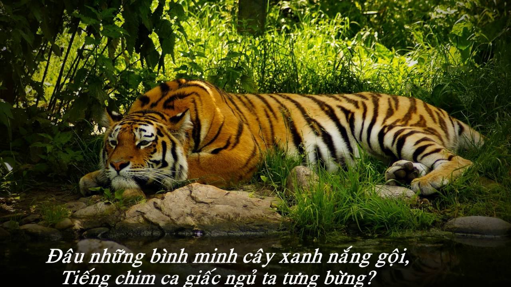

NHỚ RỪNG

Gậm một khối căm hờn trong cũi sắt,
Ta nằm dài, trông ngày tháng dần qua,
Khinh lũ người kia ngạo mạn, ngẩn ngơ,
Giương mắt bé diễu oai linh rừng thẳm,
Nay sa cơ, bị nhục nhằn tù hãm,
Để làm trò lạ mắt, thứ đồ chơi.
Chịu ngang bầy cùng bọn gấu dở hơi,
Với cặp báo chuồng bên vô tư lự.